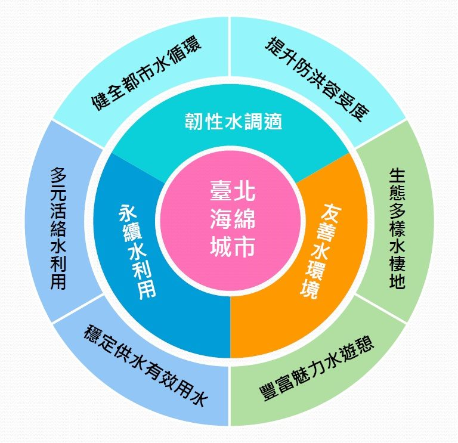
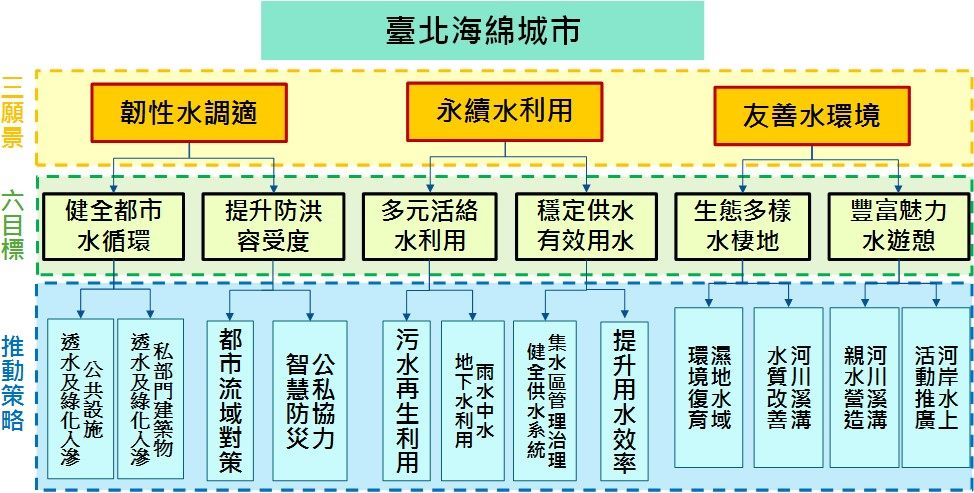

海綿城市
Sponge City
什麼是海綿城市?

海綿城市是一個比喻的說法，是一種在城市中建設防洪防澇並兼有生態環保功能的新型城市模型。比如建設透水路面以代替非透水的路面。
國際通用術語為「低影響開發雨水系統構建」，下雨時吸水、蓄水、滲水、淨水，需要時將蓄存的水釋放並加以利用，實現雨水在城市中自由遷移。
「海綿城市」是推動綠色建築建設，低碳城市發展，智慧城市形成的創新表現，是現代綠色新技術與社會、環境、人文等多種因素的有機結合，是社會進步的奠基石。「海綿城市」材料實質性應用，表現出優秀的滲水、抗壓、耐磨、防滑以及環保美觀多彩、舒適易維護和吸音減噪等特點，成了「會呼吸」的城鎮景觀路面，也有效緩解了城市熱島效應，讓城市路面不再發熱。


海綿城市的特點有哪些?
海綿城市有幾大特點：
1.天上下的雨儘量就地消化。這就是通常所說的蓄水。有地表蓄水如水庫和湖泊。有地下蓄水如透水路面和地下水窖。
2.流出本地的水流必須是清澈如甘泉。這就是通常所說的污水治理。本地所產生的污水必須在本地治理。不能把治理污水的負擔留到下游。
3.留在本地對地表蓄水和地下的蓄水必須加以重複地高效地利用。
4.每個海綿城市的區塊要儘量滿足本地所有的用水需求。
5.逐漸提升海綿城市的生態環境功能。
6.海綿城市的理想目標就是將海綿城市建設成為新興的青山綠水，使得海綿城市返歸為自然生態的一個組成部分。
什麼是透水性鋪面?
讓水能夠滲入土壤的工法，減少路面積水、行車打滑。適用於人行道、露天停車場、露天廣場及交通量不大的車道。在路面設計中，基座是行人或車輛接觸的道路的頂部。用於可滲透鋪路基底的介質可以是多孔的以允許流體流過它，或者可以使用間隔開的無孔介質，使得流體可以在裂縫之間流動。除了減少地表徑流，滲透性鋪路還可以捕獲懸浮固體，從而過濾雨水中的污染物。示例包括道路，路徑和受輕型車輛交通影響的停車場，例如自行車道，服務或緊急通道，道路和機場肩，以及住宅人行道和車道。
雖然一些多孔鋪路材料看起來幾乎與無孔材料難以區分，但它們的環境影響在質量上是不同的。無論是透水混凝土或多孔柏油路，所有這些透水材料都能讓雨水滲透並滲透到表面區域，傳統上不受下面土壤的影響。目標是通過過濾基質層中的污染物來控制源頭的雨水，減少徑流並改善水質。
什麼是田園城市?
台北，擁有河口、河岸濕地，具有全臺最大的火山地景，海拔不高卻擁有高山的特性，整體而言地質、氣候、生態、人文各種條件交織成臺北的地景，依循近郊丘陵地單面山順向坡的綠手指特色發展綠色網路，若加入生態跳島及生物避難所的概念，及強化綠地為都市之肺的功能，臺北市可望成為全世界最有資格發展為生態城市的都會區。

隨著極端氣候、能源枯竭與人口激增，二十一世紀面臨糧食危機，國際間皆致力於開發新的糧食生產來源，如何兼具發展糧食系統與永續生態城市，成為關心地球的世界公民們共同的趨勢運動。各國人民重新用自己的方式開始種植自己的食物，重新融入農耕於生活中，如倫敦、巴黎、溫哥華、舊金山、西雅圖、紐約、波士頓、東京，甚至北京等國際都會區都開始有民眾前仆後繼地在摩天大樓旁邊的空地，拿著鋤頭，耕田種菜，開始各種可食性地景的政策，從社區菜圃、校園菜圃、屋頂農園、溫室，在水泥叢林裡務農看似抽象，但許多都市農耕愛好者正在一步步努力進行革命運動，要將城市重塑為永續生態之都，包括屋頂有機香草園，並利用閒置或廢棄的都會空間，建立田園城市。城市的都會區。
本市柯市長於政策白皮書提出希望臺北市變成一個可以種田、種菜的城市之政見，為了達成將臺北市打造成田園城市之政策目標，營造都市農耕新典範，本推廣計畫將藉由建立田園銀行，整合田園銀行基地，建立農業技術輔導，以及透過由下而上的民眾參與方式，經營管理田園基地等等作法，讓民眾可以親自動手栽植、採收農作物，體驗當都市農夫之樂趣，此外也可從中體會農民的辛勞，意識到作物生產的過程，體認到土地與水資源的可貴，瞭解有機種植對維持環境永續的重要性，進而改變人們看待食物的方式。
田園城市推廣計畫之願景是期望「打造臺北市為一個綠色健康、教育、生活之田園城市」。更進一步歸納願景的理念與精神如下：
一、綠色健康的田園城市：
(一)田園城市是建構在都市生態架構之下，延伸及補充綠地系統，增益都市之生態功能。
(二)田園城市是整合都市中可以耕作的面積，發展兼具糧食系統與永續生態城市。
(三)田園城市不是傳統的綠化或農耕，並非單指在都市中進行農耕活動，而是運用都市中的閒置空間、畸零地等作為田園基地，不排擠原有使用機能與使用計畫，打造「可食地景」（Edible Landscape）。
二、綠色教育的田園城市：
(一)除可以耕作面積的開闢外，教育人才應同步盤點，廣泛運用於基礎教育及社會教育中。
(二)深耕良好飲食習慣及惜物觀念於基礎教育中，在學校建設小田園計畫透過食農教育，讓學生有學習種菜、照顧及採收作物的機會，可以看到食物原來的樣子。
(三)在民眾參與耕耘可食地景的過程中，輔以農業技術輔導，建立正確的理念。
三、綠色生活的田園城市：
(一)田園城市推廣計畫是透過民眾參與方式由下而上推動，透過種菜建構人與人的互動關係，並傳達「分享」的理念，朝向自理的公民倫理。
(二)田園城市是讓民眾可以親自動手栽植、採收，體驗當都市農夫之樂趣，從中體會農民的辛勞，進而改變人們看待食物的方式，體認到土地與水資源的可貴。
(三)田園城市的可食地景是兼顧視覺景觀，促成社區美學推廣的綠色健康的新生活態度。
海綿城市、田園城市展示平台
使用說明
1. 右列圖層可直接點按按鈕，開啟或關閉
2. 可用滑鼠滾輪放大縮小地圖
3. 點選感興趣區塊，會有進一步資訊